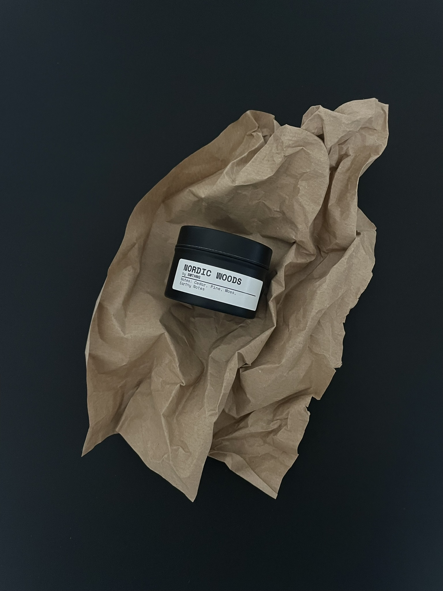
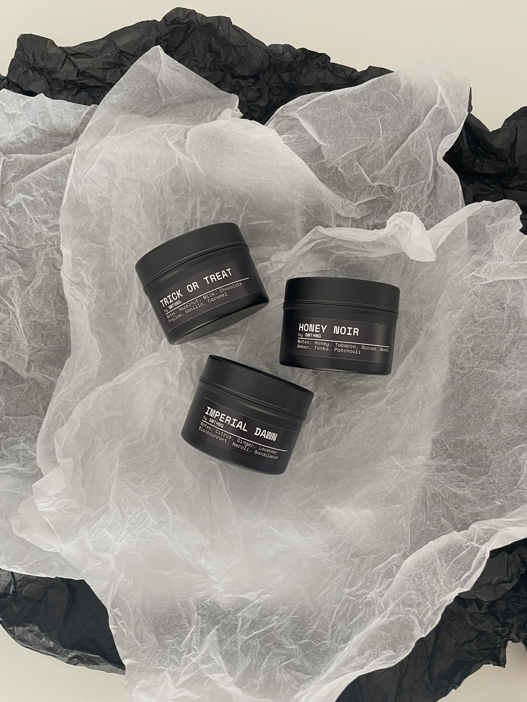
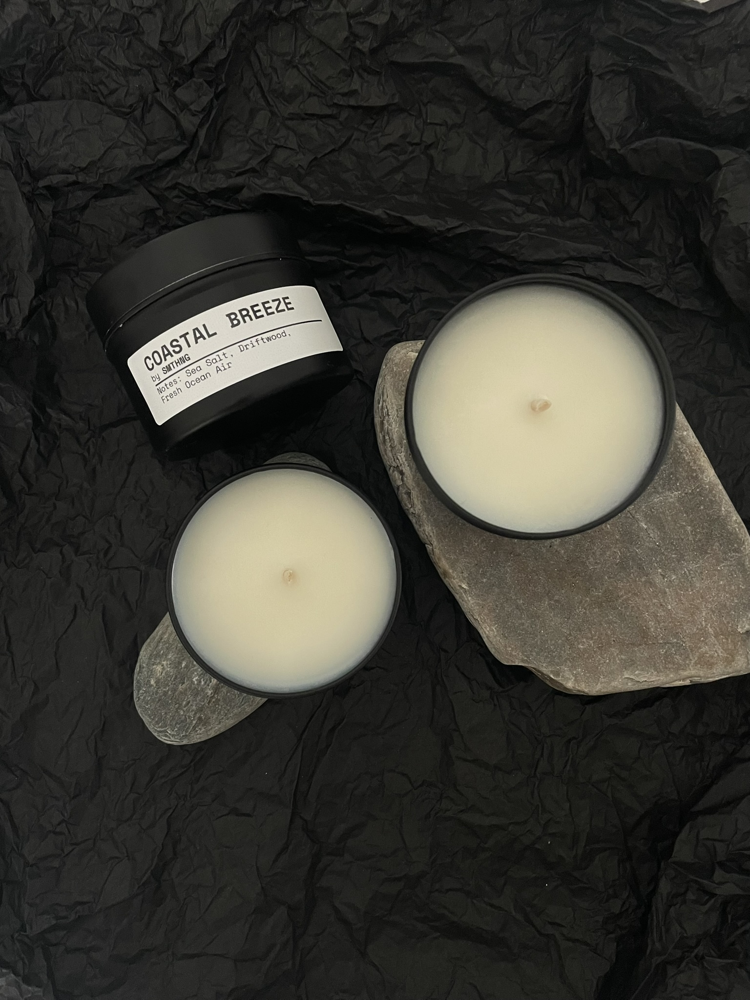
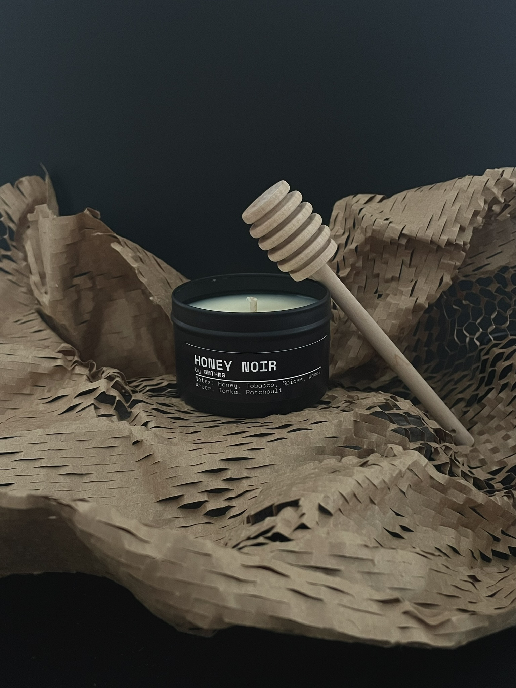
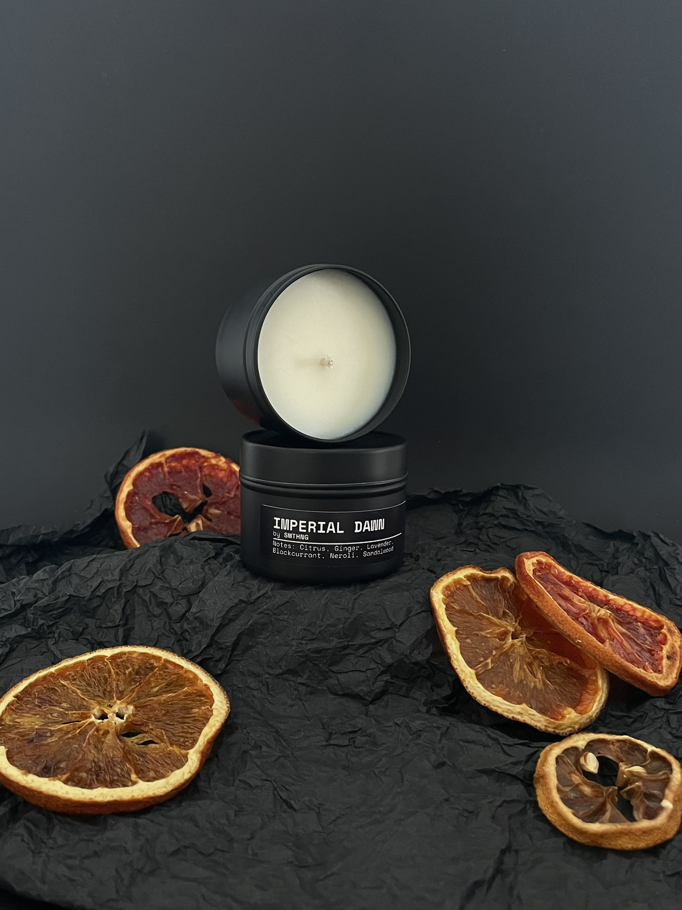
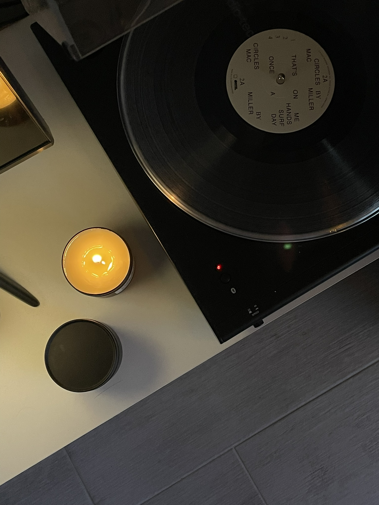
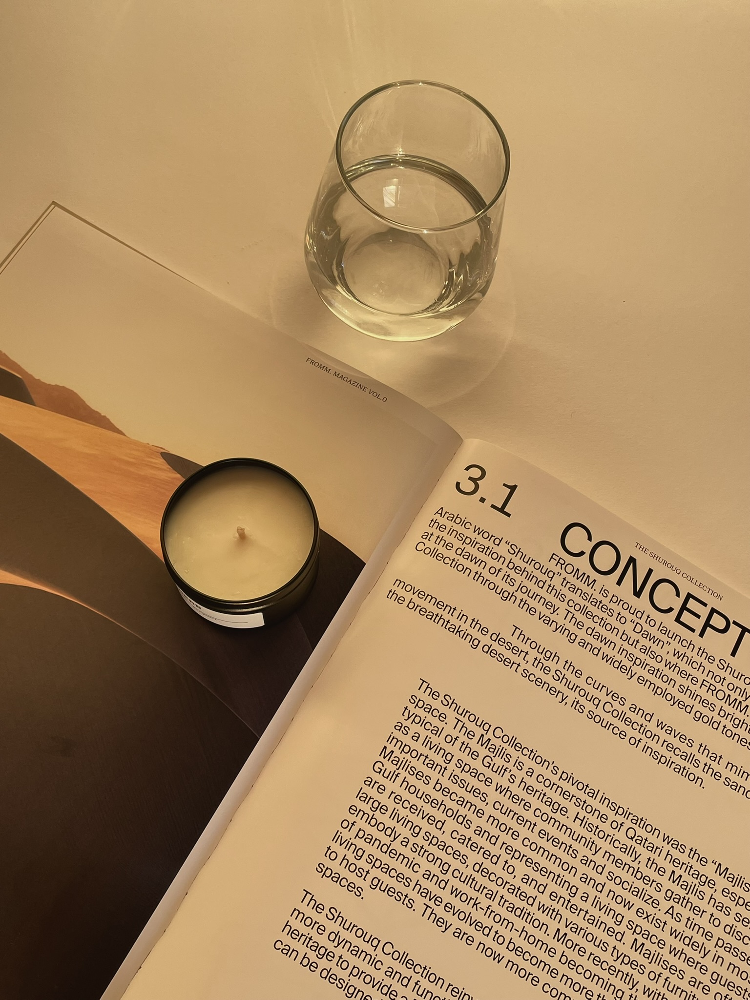

01
NORDIC WOODS
Cedro · Pinho · Musgo
✳ ESTÚDIO INDEPENDENTE DE AROMAS — PORTO
Velas aromáticas feitas à mão, em pequenos lotes. Para espaços com personalidade e momentos que merecem durar.
Explorar a coleção
OBJECTS WITH A POINT OF VIEW — EST. PORTOAcreditamos que um aroma pode mudar a forma como se sente um espaço. Criamos velas para quem gosta de objetos simples, de detalhes inesperados e de escolher o seu próprio ambiente.
De frescos e minerais a quentes e envolventes. Aromas com personalidade, sem regras.

Cedro · Pinho · Musgo

Sal marinho · Madeira à deriva

Mel escuro · Tabaco

Uma composição luminosa e envolvente
Disponibilidade mediante pedido.

Uma luz mais suave. Uma música escolhida. Um aroma que fica. Às vezes, é tudo o que falta.
✳Cada vela é produzida artesanalmente no Porto, com cera de soja, pavio de algodão e uma lata metálica reutilizável. Sem excessos. Só aquilo que importa.
Ver o nosso universo